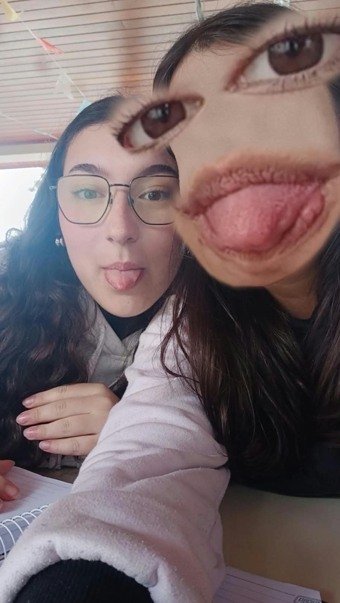

melhores amigas



Ana Motta!🎉
Hoje é sobre alguém que tem o dom de transformar qualquer momento em algo mais leve e divertido, com aquele senso de humor afiado e um jeito contagiante de ver a vida. Ana é daquelas pessoas que chegam e já mudam o clima do ambiente.
Mas não é só a alegria que faz dela alguém tão especial — por trás de cada piada existe um coração gentil, generoso e sempre disposto a ajudar quem precisa. Essa mistura de bom humor com sensibilidade é rara de encontrar.
Que essa nova fase venha cheia de risadas, conquistas e muitos motivos pra comemorar. Parabéns, Ana Motta! 💛🥳
foi mal, sou ruim em palavras


NOSSO GRUPO
Já parou pra pensar quanto tempo já se passou, doido? Nem faz tanto tempo assim, começou do nada numa fofoca aleatória da Soso careca, e do nada virou um grupinho se formando — nada de 20 cabeça, mas aquele tipo de grupo pra combinar de ir no shopping mesmo, sabe. Você e a Amabily entraram nessa e eu nem sei explicar direito como isso aconteceu tão rápido. Tipo, se alguém tivesse me falado antes que a gente ia ficar de amigo eu ia rir da cara da pessoa — mas rolou, e rápido. Pra mim pelo menos foi bem inesperado (não sei se pra você também foi, viu, quem sabe você já tinha um plano mestre aí kkk). Que voces virem coisa boa por muito mais tempo.